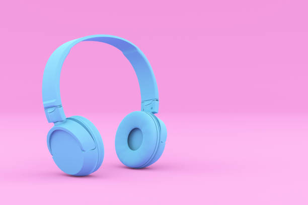

Glassmorphism
Is a card-based interface used for designing the user interface of websites, smartphones, web app, mobile apps, etc. based on three important effects: transparency (frosted-glass), vivid or pastel colors, and a light border.
Read More